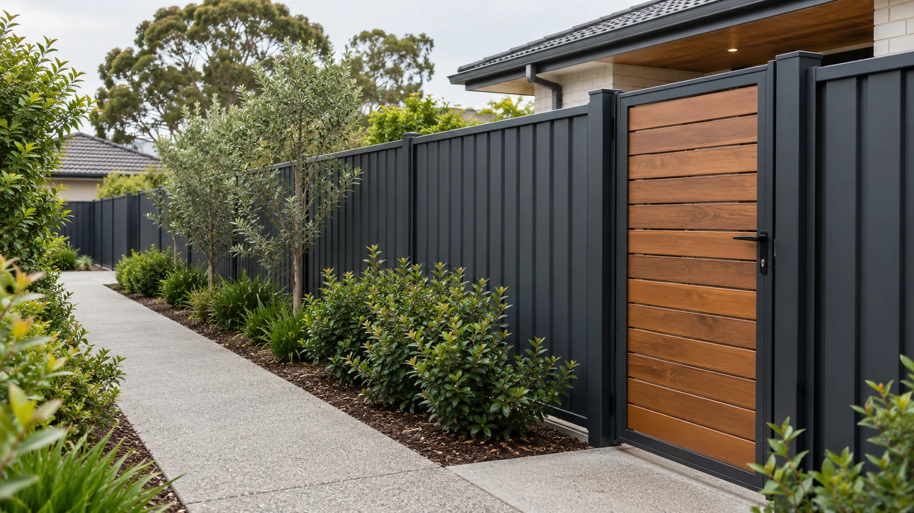
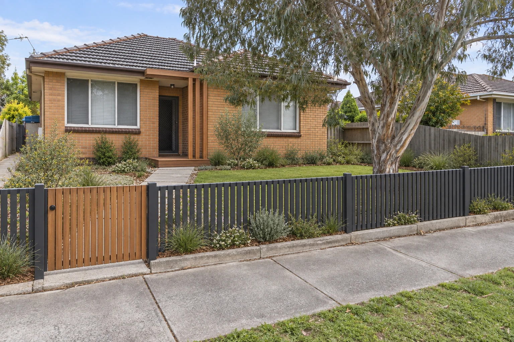

Familiar texture and simple repairs. Plan for movement, weathering and a coating cycle if you want the colour to stay consistent.
Service 01 · Boundaries
Fencing that
holds the line.
Privacy, security and a clean finish, measured for the block you actually have.
Plan my boundary ↗
Start with the siteWhat makes a fence
What makes a fence
feel finished?
The panel matters, but the line it follows matters more. Corners, slope, retaining edges and gate swing all change the result. A useful scope shows the full boundary, the neighbour-facing finish and what happens to the old fence.
- Confirm the boundary position before holes are dug.
- Mark changes in level and any retaining work separately.
- Allow enough clear width for the gate you will actually use.
Material decisionsA good boundary
01 / Timber paling 02 / Steel panels 03 / Slat screens
A good boundary
has two sides.
Choose a finish for the view from your own garden, then check how posts, rails and colour read from the neighbour’s side.
A crisp, low upkeep line. Stepped panels suit some slopes; other sites need a different detail at the base.
Useful where filtered privacy matters. Gap size, sightlines and support posts deserve as much attention as the slat finish.

Build the next stepGot a line
Start the quote brief ↗